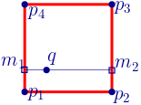

Assignment 02 - Undergraduate
Images
Project Reposatory
link
Program Due: Sep. 24, 2020 23:59:59 PM
Written Due: Sep. 24, 2019 23:59:59 PM
Graded: Oct. 02, 2019
Assignment Description: Under Review
Undergraduates will extend their basic image loading program to be able to load images, process them with certain image processing filters, and then save the filtered image to a file.
Objectives
This assignment is designed to teach techniques that relate to:
- Color spaces and representations of the image range space.
- Processing color spaces to provide adjustments common to how images are displayed.
- Implementing these adjustments through rescaling filters.
- Processing images related to a signal processing framework.
- Implementing a basic resizing filter that relies on signal processing of regions of data to control for sampling artifacts.
Part 1: Preliminaries
Note that this repository does not include any default code to start with. I have distributed a few new image files to test with (although you can and should test with some of the previous images as well). I expect that you will transfer over code as needed from the previous assignment.
Your main task is to modify your code from Assignment 01 so as to support two types of image processing operations:
-
Rescaling, by adjusting the displayed colors on a per pixel basis. In particular, the user must be able to adjust the
gain,bias, andgammaof the displayed image. -
Resizing, by producing and displaying the image at a different resolution and using signal processing concepts to reconstruct the input image and control for artifacts.
Both of these filters will take a collection of parameters, and the user should be able to adjust these parameters while the program is executing, to dynamically set them before applying the filter. You are encouraged to use whatever interface you like for this (e.g. HTML GUI widgets such as inputs), but please make sure your README documents how to use your program.
Part 2: Implementing Rescaling Filters
Your rescaling filter should modify the resulting RGB values of the input data. I find it is most
straightforward to think about these filters processing data in the range
, so you may want to convert how you stored
your image data in Assignment 01. In my implementation, I used a Float64Array internally for storage, and then map the values to
only when displaying them.
After the user specifies values for gain, bias, and gamma, your program
should scale all color channels. To do this, you’ll have to create some mechanism to update the underlying
data and then redisplay the image. This should allow the user to test various combinations of these
parameters. For this, I found combinations of HTML range and number inputs to be of use, see https://developer.mozilla.org/en-US/docs/Web/HTML/Element/input
for more information. I then added event handlers to process the image on change.
For the actual computation, you should take each image channel and separately update it using the following expression:
Note, this might produce values outside of the range
. In these situations you should clamp
your values back into the appropriate range. If you fail to clamp the data, you will produce a variety of
visual artifacts (which might be fun to test with, but you will be penalized if you do not correct them!).
Alternatively, you might want to consider storing values outside of the range
and then using a Uint8ClampedArray (the default type for ImageData’s data property to do
the final clamping before display).
Part 3: Implementing Resizing Filters
You could assume that the RGB values are equal in each pixel. So your image is inherently a gray-scale one. It will be of size of 100 × 100 pixels.
Your program should present two canvases. The left is of size 150 × 150 and the right canvas is of size 600 × 600. In the left, you will show the image (in its original size of 100 × 100 ). In the right, you will show the same image, but rescaled by a factor of 4.5, into an image of size 450 × 450.
To populate the pixels of the larger image, compute the colot of each pixel using a reconstruction filter. Note that output pixels are located between input pixels, and the color of each output pixel should be determined by several inpout pixels, as we discussed in class.The main key is to interpolate the data using more than just nearest neighbor interpolation. As discussed in class, this can be achieved by using a discrete-to-continuous convolution, where the filtering kernel is not a discrete array but a continuous function. Each pixel in the enlarged image can be thought of as having a floating point position in the original image, and you can use convolution to reconstruct what is.
You are encouraged to experiment with different types of filters and mechanisms for allowing the user to mitigate artifacts, for example, you may want to let the user adjust the size of the smoothing kernel and recomputing the output image while the program is running. To receive full credit for artifact mitigation, you must consider both the case of enlarging and shrinking the image and document your solution to artifact removal in the README.
Since you are using convolution for this task, you will run into an implementation edge case that you must also handle and document precisely how you handled it. This case occurs when you are working with a pixel near the boundary of the image. In the cases where pixels are close to the boundary, a convolution kernel centered at that pixel will extend beyond the image extents. To address this, you must implement a boundary condition. There were different ways discussed in class, and you are welcome to pick any of the them.
Note that convolutions with tent is in some cases, very similar to linear interpolation. If you prefer (for partial credit) you could use linear interpolation directly. In this case , if you need to intepolate the intensity at a point q, where the intensities at the four pixels p1 ...p4 is given, you could find first the intensities at the points m1 and m2, and use these 2 values to obtain the value at q. However, note that this technique does not perform smothing.
Part 4: Written Questions
Please answer the following written questions. You are not required to typeset these questions in any particular format, but you may want to take the opportunity to include images (either photographed hand-drawings or produced using an image editing tool).
These questions are both intended to provide you additional material to consider the conceptual aspects of the course as well as to provide sample questions in a similar format to the questions on the midterm and final exam. Most questions should able to be answered in 100 words or less of text.
Please create a separate directory in your repo called written and
post all files (text answers and written) to this directory. Recall that the written component is due BEFORE
the programming component.
-
In rescaling images, individually adjusting only gain or bias typically is not sufficient to improve the image. Explain why we need both. In particular, discuss the resulting effects on the image when adjusting gain vs. bias.
-
3 × 3 convolution kernels can create a variety of effects. Consider the following three kernels. Briefly describe the output image that is produced as a result of convolution with each kernel (you may assume each are scaled differently if necessary). You are encouraged to draw figures to demonstare the imact of each filter.
a.
b.
c.
-
Draw and label a diagram of the HSV color space. Include a brief description of each variable, its role in the final color, and a possible numeric range. There are 8 cases that you need to discuss. Discuss the case where all 3 values of HSV are as small as possible, the case when all three are as large as possible, and any other interesting cases.
- Let I be an image. You should perform two operations on this image. (i) smothing the image (convolution with a smoothing filter) and then (ii) rotate the image by 45 degrees. Will the result be different if you start by rotating the image and only then apply the smothing filter ?
Grading
Deductions
| Reason | Value |
| Program crashes due to bugs | -10 each bug at grader's discretion to fix |
Point Breakdown of Features
| Requirement | Value | ||||||||||||||
| Consistent modular coding style | 10 | ||||||||||||||
| External documentation (README.md) | 5 | ||||||||||||||
| Class documentation, Internal documentation (Block and Inline). Wherever applicable / for all files | 15 | ||||||||||||||
Expected output / behavior based on the assignment specification,
including
|
70 | ||||||||||||||
| Total | 100 | ||||||||||||||